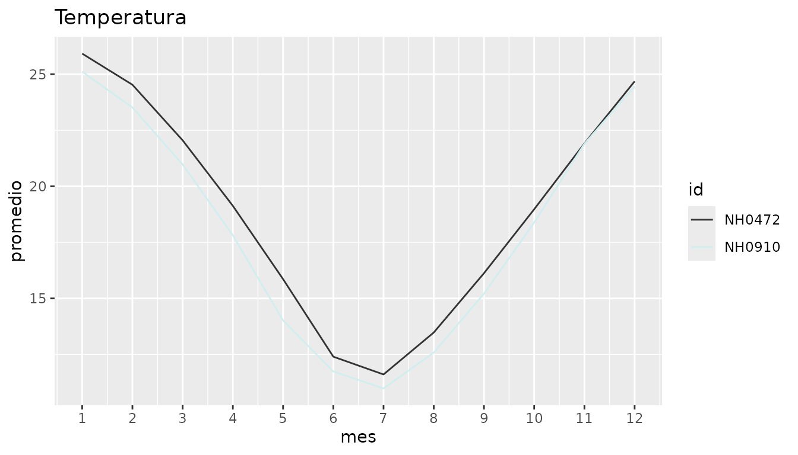
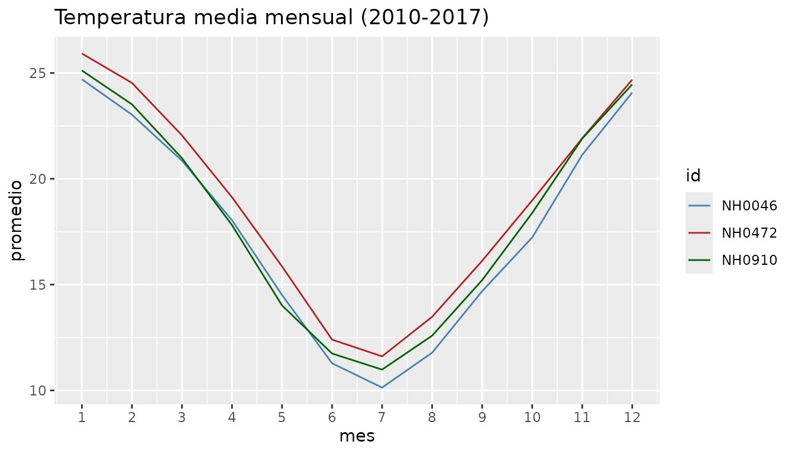
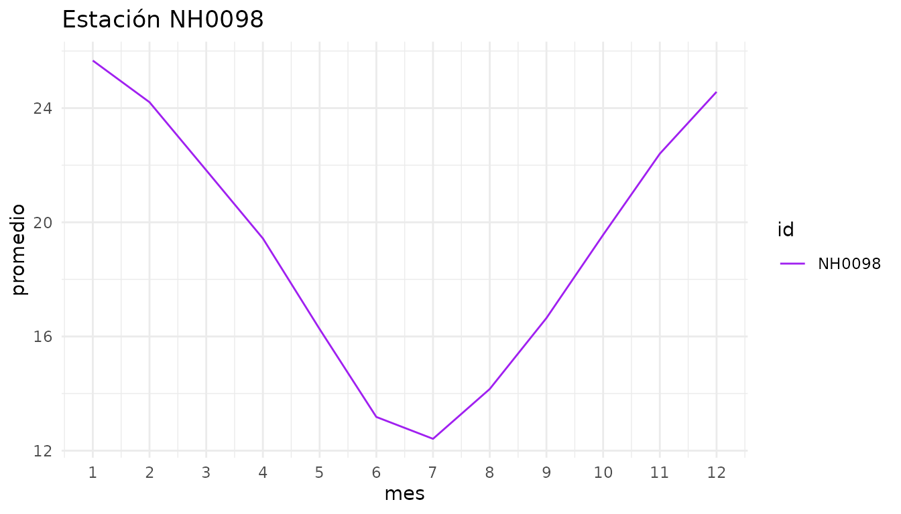

Introducción a cienciademetadatosR
Source:vignettes/cienciademetadatosR.Rmd
cienciademetadatosR.RmdcienciademetadatosR es un paquete para descargar,
resumir y graficar datos meteorológicos diarios de estaciones del INTA.
En esta viñeta mostramos el flujo de trabajo completo: obtener los
datos, resumirlos en una tabla y visualizar cómo varía la temperatura a
lo largo del año.
Los datos incluidos en el paquete
El paquete trae el conjunto de datos estaciones. Tiene
registros diarios de temperatura de 5 estaciones meteorológicas entre
2010 y 2017. Es un recorte de los datos originales y sirve para probar
las funciones sin descargar nada.
head(estaciones)
#> id fecha temperatura_abrigo_150cm temperatura_abrigo_150cm_maxima
#> 1 NH0472 2010-01-01 23.35 27.5
#> 2 NH0472 2010-01-02 23.85 31.9
#> 3 NH0472 2010-01-03 26.00 31.8
#> 4 NH0472 2010-01-04 28.00 34.5
#> 5 NH0472 2010-01-05 27.50 36.1
#> 6 NH0472 2010-01-06 22.05 25.5
#> temperatura_abrigo_150cm_minima
#> 1 19.2
#> 2 15.8
#> 3 20.2
#> 4 21.5
#> 5 18.9
#> 6 18.6Cada fila es un día en una estación. Las columnas son:
-
id: identificador de la estación (por ejemplo"NH0472"). -
fecha: día de la medición. -
temperatura_abrigo_150cm: temperatura media del día (°C). -
temperatura_abrigo_150cm_maxima: temperatura máxima del día (°C). -
temperatura_abrigo_150cm_minima: temperatura mínima del día (°C).
Para ver qué estaciones hay disponibles:
unique(estaciones$id)
#> [1] "NH0472" "NH0910" "NH0046" "NH0098" "NH0437"Descargar datos de otras estaciones
Si se necesitan datos completos o de otra estación,
leer_datos() descarga el archivo desde el repositorio del
curso, lo guarda en la ruta indicada en destino y lo
devuelve como un data frame.
datos_nh0046 <- leer_datos(id_estacion = "NH0046", destino = "NH0046.csv")
head(datos_nh0046)Este bloque no se ejecuta al construir la viñeta porque necesita conexión a internet.
Resumen de temperaturas por estación
tabla_resumen_temperatura() calcula, para cada estación,
la temperatura mínima y máxima registradas, el promedio y el desvío
estándar de la temperatura media.
Con una sola estación:
tabla_resumen_temperatura(estaciones, ids = "NH0472")
#> # A tibble: 1 × 5
#> id temp_minima temp_maxima promedio desvio
#> <chr> <dbl> <dbl> <dbl> <dbl>
#> 1 NH0472 -6 40.6 19.0 5.94Con varias estaciones a la vez, para compararlas:
tabla_resumen_temperatura(estaciones, ids = c("NH0472", "NH0910", "NH0046"))
#> # A tibble: 3 × 5
#> id temp_minima temp_maxima promedio desvio
#> <chr> <dbl> <dbl> <dbl> <dbl>
#> 1 NH0046 -5.7 38.8 17.5 6.05
#> 2 NH0472 -6 40.6 19.0 5.94
#> 3 NH0910 -7.5 43 18.0 6.22Si no se indican ids, se resumen todas las estaciones
del data frame:
tabla_resumen_temperatura(estaciones)
#> # A tibble: 5 × 5
#> id temp_minima temp_maxima promedio desvio
#> <chr> <dbl> <dbl> <dbl> <dbl>
#> 1 NH0046 -5.7 38.8 17.5 6.05
#> 2 NH0098 -6.4 42 19.1 5.86
#> 3 NH0437 -3.4 41.5 20.5 5.76
#> 4 NH0472 -6 40.6 19.0 5.94
#> 5 NH0910 -7.5 43 18.0 6.22Gráfico de la temperatura mensual
grafico_temperatura_mensual() calcula la temperatura
media de cada mes y dibuja una línea por estación. Así se ve el ciclo
anual de la temperatura.
grafico_temperatura_mensual(estaciones, ids = c("NH0472", "NH0910"))
Si no se indican colores, la función los elige al azar. Para un gráfico reproducible conviene pasar un color por estación y un título propio:
grafico_temperatura_mensual(
estaciones,
ids = c("NH0472", "NH0910", "NH0046"),
colores = c("steelblue", "firebrick", "darkgreen"),
titulo = "Temperatura media mensual (2010-2017)"
)
Como la función devuelve un objeto de ggplot2, se le
pueden agregar capas:
grafico_temperatura_mensual(
estaciones,
ids = "NH0098",
colores = "purple",
titulo = "Estación NH0098"
) +
ggplot2::theme_minimal()
Flujo de trabajo completo
Un análisis típico combina las tres funciones: descargar los datos, resumirlos y graficarlos.
mis_datos <- leer_datos("NH0437", destino = "NH0437.csv")
tabla_resumen_temperatura(mis_datos)
grafico_temperatura_mensual(
mis_datos,
ids = "NH0437",
colores = "orange",
titulo = "Estación NH0437"
)